Australie
Top 10 des spots de surf
- Bells Beach (Sud Ouest de Melbourne)
- Superbank (Queensland)
- Byron Bay (New South Sales)
- Noosa Heads (Queensland)
- Margaret River (Western Australia)
- Bondi Beach (Sydney New South Wales)
- Ours (Sydney New South Wales)
- Shipstern Bluff (Tasmanie)
- Tamamara Beach (Sydney)
- Snapper Rocks (Gold Coast)


Gastronomie
Barramundi
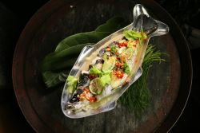
À l’origine il était confectionné à
base d’aubergines et la recette
traditionnelle est encore utilisée
dans les restaurants vegan.
Toutefois,
au fil du temps, elle
a largement évolué et le Poulet
Parmigiana traditionnel
a laissé
place à une escalope de poulet
panée délicieuse.
Souvent garnis de sauce
tomate, de fromage fondu
(mozzarella ou parmesan)
et
de jambon, certains y ajoutent
parfois du bacon. Le poulet est
généralement
servi avec de la
salade et des frites.
Tourte à la viande
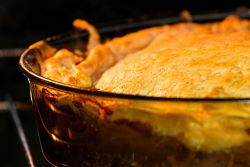
La version gastronomique avec
de la purée de pommes
de terre
et de pois est également populaire.
Facile à
transporter, ce plat
gourmand est particulièrement
apprécié
lors d’événements
sportifs ou de picnics. Les tourtes
à la
viande sont très faciles à
préparer et constituent également
une délicieuse option lors de fêtes
ou célébrations en tout genre.
Poulet-Parmigiana
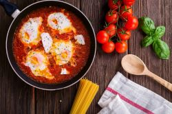
À l’origine il était confectionné à
base d’aubergines et la recette
traditionnelle est encore utilisée
dans les restaurants vegan.
Toutefois,
au fil du temps, elle a
largement évolué et le Poulet
Parmigiana traditionnel
a laissé
place à une escalope de poulet
panée délicieuse.
Souvent garnis
de sauce tomate, de fromage fondu
(mozzarella ou parmesan)
et de
jambon, certains y ajoutent parfois
du bacon. Le poulet est
généralement
servi avec de la
salade et des frites.
Pavlova
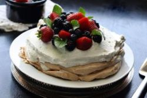
Bien que la Nouvelle-Zélande
revendique également l’invention
du pavlova,
ce gâteau meringue
est une véritable institution en
Australie. Baptisé en l’honneur
de
la ballerine russe Anna Pavlova,
ce délicieux dessert consiste
en une meringue
croustillante
coiffée de crème chantilly et
de fruits frais.
Lamingtons
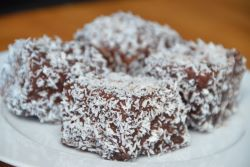
Le lamington est le gâteau
australien par excellence.
Reconnue comme une
icône
australienne par le ministère de la
culture du Queensland, cette
friandise porte le nom de Lord
Lamington. Celui-ci était un ancien
gouverneur
australien.
Le Lamington est un gâteau
éponge de forme carrée roulée
dans du chocolat
et recouvert de
noix de coco séchée. Comme
toujours en Australie, il existe
des
variantes, dont l’ajout de
crème anglaise ou de confiture à
l’intérieur
du gâteau.
Pain aux fruits secs
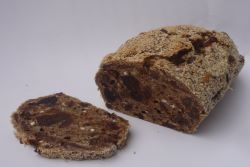
Fabriqué à partir de thé, de fruits
secs et de cannelle, ce pain aux
fruits
secs caractéristique du pays
est à la fois savoureux et copieux.
Sa garniture délicieuse et son
glaçage à la crème anglaise en
font
un incontournable pour les
sorties entre amis ou famille.
Art Aborigène
| 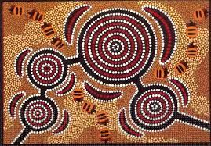 | 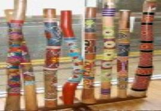 | 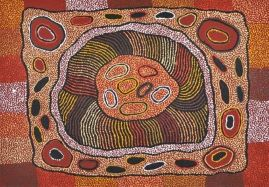 | 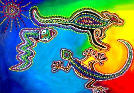 | |
| 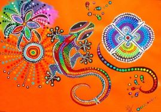 | 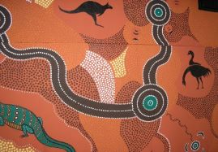 | 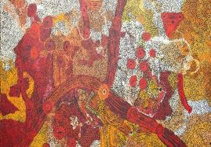 | 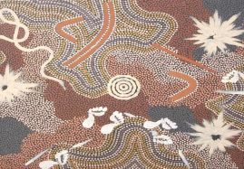 | |
| 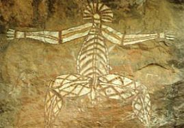 | 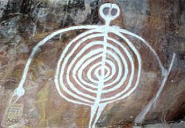 | 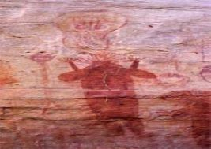 | 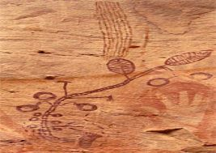 | 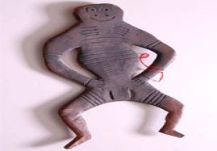 |
| 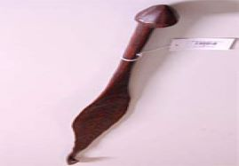 | 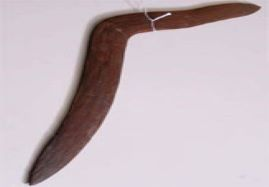 | 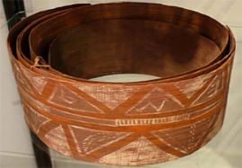 | 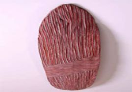 | 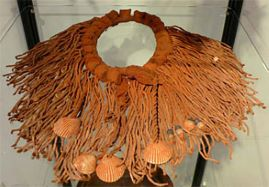 |
| 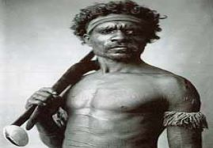 |  |
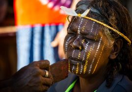 | 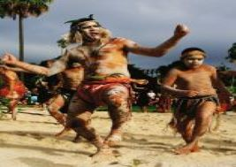 | 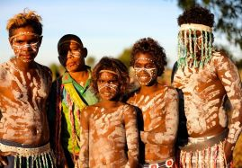 |